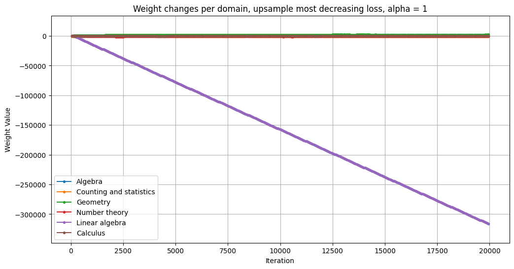
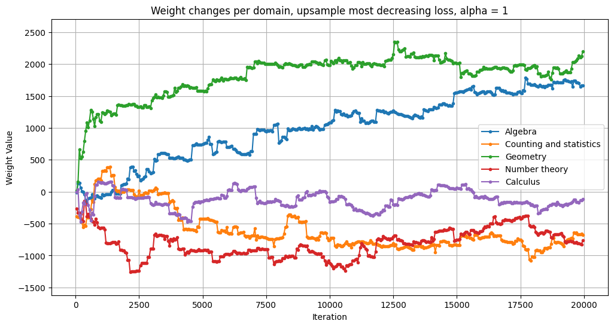

| Dynamic Mixture Optimization (DynaMO) | |||
| Abhay Bestrapalli | Gilford Ting | ||
| Final project for 6.7960, MIT | |||
| Dynamic Mixture Optimization (DynaMO) | |||
| Abhay Bestrapalli | Gilford Ting | ||
| Final project for 6.7960, MIT | |||
Suppose our dataset contains $N$ domains, where each domain is represented by a dataset $D_i$. Our method introduces a new set of parameters into the training process – these are domain weights $w_1$ to $w_N$, used to select the specific domain whose dataset we sample a datapoint from (specifically, weight $w_i$ directly influences the chance that $D_i$ is selected).
DynaMO adjusts these domain weights during the training process – specifically, every $T$ training steps (we fixed $T=50$ for all our experiments), we perform a dynamic update using a custom reweighting policy. This is done by observing the structure of the $N$ different loss curves for each domain. The specific policies that we tested are summarized below:
To allow dynamic reweighting during finetuning/training, we adjusted the data loading process. Normally, domain weights would be used to subsample from a larger dataset and be passed in as a fixed dataset into the training process – because the nature of our method requires the sampling step to be done during training, we modify PyTorch's Dataset class as needed. The weights are stored internally to this class, and every time getitem is called on this custom Dataset class, a domain is sampled using these weights and a datapoint is sampled from that domain. This custom dataset also tracks losses across the domains – each domain maintains a length-100 sliding window that can be used to determine how the loss has evolved in the recent pass. Finally, each dataset instance also has its own weight update policy function, called every $T$ training steps, that describes how to update the domain weights based on the current weights and the loss windows for each domain.
Again, there are no appreciable results. When looking at the weight change plots, the policies that consider average loss behave the same as before – all domains scale up equally in lockstep. For the policies considering change in loss (both upsampling and downsampling), however, we observe a more interesting phenomenon:
 Here, one domain gets weighted down significantly while the other domain weights start to have more meaningful adjustments. We suspect that the downweighting of one domain occurs when it simply gets unlucky – the change in loss is maximally adversarial and makes it decrease the most out of all domains, which then causes it to be sampled less, leaving the last two loss values in the window unchanged – another runaway effect is observed. For the other domains, we see some changes that are at a larger scale than before – some of the domains have a definitive trend upwards. However, these results are not consistent across policies/differing values of alpha. See the following plot:
Here, the domains are essentially in a random order compared to before. Thus, we conclude that the evolution of these domain weights is largely the accumulation of noise, just on a higher scale than in previous runs.Although our method did not produce significant results on the model and datasets we experimented with, we have gained a much better understanding of the problem and suggest many promising future directions.
Firstly, we chose to finetune on subsets of a specific domain rather than finetune on domains that were very different. For example, having domains of English vs. code vs. Spanish would prove to be very different problems for the model, and the model might learn a more effective set of weights -- it's possible that many of the math domains were too similar (e.g. math formatting, tone of the problem statement, etc.) With a larger and more diverse dataset, we might observe more meaningful results.
Furthermore, we used a 1B parameter LLM because of computational constraints -- at this stage, the model is likely not good enough to learn the nuances between different data domains. We tested the output of the generated models, and this is what they often looked like:
Question: Solve for x: 2x + 3 = 11
Generated Answer:
$$$fracfracrightfracfracright$\$\$sqrt$$\$\\$\$$\$\$\$\$\$\$$$$\$\$$$\\$$\$\,3$right$\\left{${3$\{$\$$$$\right{right+{{right{{{2\{22+{1{2{22{2\{right3right\22}2end2$2{$right\$end$\right{end$\2{\+\3{{\3right\{\{\\{{\{{-\2right13right34{\{right$2{,\2right\1\\{0\{{{\end{2,2}{1right{$&\\11right\2{{&{end{end{}\2\\{end$end$endright22{\{end{\\
\end\rightrightend02\2left32{\\endright\\\right{\{\\{\\end\\\4rightend\\right\\\\{2\\2\2end22\end2\rightright22{\2endend\\\22{\2end5\end2{1\{\\{\right2{2\\\{\\{2,2{\{4\15\{end\\\\\}\\\\5\{\&\{\3\\{\5&24\{\4{2\\{\3\0\&\\\1\\2\\\5\\{\\352\\\\3\\\\{\\\\6\\\\2\\2rightend5\{\\,26\\\2\5\\\\\4\2\2\\\5\\\2\5}2\\\\\2{{{&^\62\\{\end5002{12{&2\22222{5,end65\\\,52155{122562\
From this, we can see that the model is only really learning what tokens are likely to occur in a formatted math problem – it’s predicting lots of numbers and formatting keywords instead of any coherent output. Because of its limited size, it only got a general idea of what math output is supposed to look like, and is not actually learning the underlying concepts. Under this lens, it makes sense that the different reweighting policies were all effectively equivalent – our small model was not able to understand the difference between different domains because it was still learning the higher-level structure of math-formatted text. If possible, we would run this using a much larger model with stronger baseline math capabilities – we suspect that once the model is able to glean more of the nuances in the data, the mixture reweighting will prove to be more effective.
Our experiments also proved that the scale of the weight updates is also a crucial aspect of the reweighting policy – in our results, we clearly found that an $\alpha$ of 0.1 vs 1 crossed some boundary that induced different behavior. With more compute available, we would do a more fine-grained search on $\alpha$ and find the most significant value(s) within this interval. Furthermore, this scale is likely specific to our task – in a different training/finetuning environment with a different loss scale and different domains, the exact value of $\alpha$ that is optimal for weight updates would likely be very different. One possible approach to finding this value would be to develop a proxy model that is able to adjust $\alpha$ as training evolves – this could be some simple meta-learning approach or as complicated as a mini neural network.
Lastly, we operated in the realm of finetuning vs pretraining. It’s possible that with pretraining, mixture reweighting could look very different – the model might need to learn from more general knowledge before it is able to fully understand the information from a more specific domain (e.g. English before code).
Overall, we’re optimistic about bringing this method to a larger scale of LLM development – there are many exciting research directions that could bring us closer to truly adaptive curriculum learning.